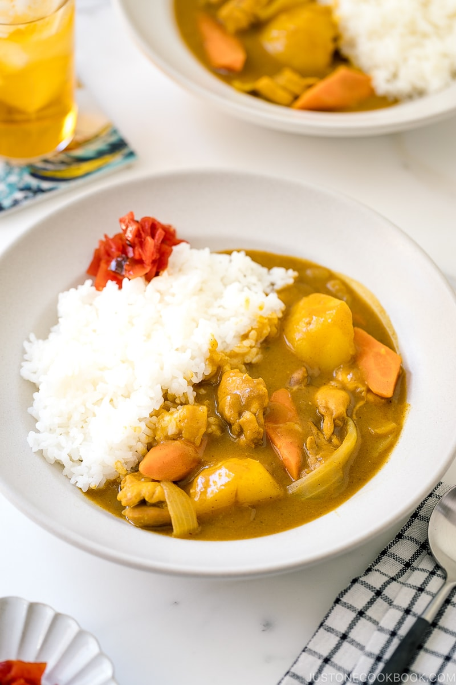

My List of Recipes!
It's short but I'm getting there :') She's growing.
- Non-Vegetarian Curry
- Korean Sausages
- Roasted Potatos
- Pasta
- Mashed Potatoes
- Tacos
- Shredded Chicken
Non-Vegetarian Curry
Ingredients
- 2 Onions
- 4 Yukon Gold Potatos
- 2 Big Carrots
- 1.5 Pounds of Chicken Thighs
- Garlic
- Oil
- Curry Powder
- Flour
- Vietnamese Peppers
- Salt & Pepper
- Sesame Oil (or any oil you have is fine)
Not all of these ingredients need to be specifically acquired, whatever you have on hand is fine too. Even if you only have like one onion that's fine too. Everything is to taste! So however much of anything you want is fine.
Especially the meat. Like...My family is definitely not vegetarian so add whatever you have on you! XD
Cooking
- Debone the chicken thighs (if you know how to)
- Cut onions, potatoes, and carrots into bite-size pieces
- Soak the potato pieces in water for 15 min to get rid of excess starch
- Mince Garlic (unless you have already minced garlic)
- Heat up oil in pan and put the garlic and onions in (stir until the onions are slightly translucent
- Add in the potatoes and carrots until they start sweating
- Then add the chicken until the outside is just slightly cooked
- Add water (enough to just barely cover all the ingredients in the pot
- Add in the spicy vietnamese peppers (if you like it extra spicy)
- When the water is boiling, slowly stir the curry powder into the pot (however much you want, if you like a stronger taste then you'd add more)
- If the water has reduced too much, add more and then add more curry powder to balance
- Slowly stir tiny pinches of flour to thicken (the curry is boiling so the consistently will be more liquidy than when it cools down so be careful)
- Add salt and pepper to taste